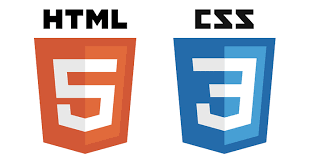

Jane Momp
Programmer
I'm Jane I worked for seven years in the IT inductry
My favorites languages |
|

|
RubyÀ propos de Ruby Indéniablement, Ruby devient de plus en plus populaire. Les « rubyistes » qualifient ce langage d’élégant, voire lui prêtent des qualités artistiques ; ils soulignent dans le même temps qu’il est pratique à utiliser et facile d’accès. Mais tout ça est très éthéré, qu’en est-il concrètement parlant ? |
|  |
HTMLL’HyperText Markup Language, généralement abrégé HTML, est le langage de balisage conçu pour représenter les pages web. C’est un langage permettant d’écrire de l’hypertexte, d’où son nom. HTML permet également de structurer sémantiquement et logiquement et de mettre en forme le contenu des pages, d’inclure des ressources multimédias dont des images, des formulaires de saisie, et des programmes informatiques. |

|
JavascriptJavaScript est un langage de programmation de scripts principalement employé dans les pages web interactives mais aussi pour les serveurs2 avec l'utilisation (par exemple) de Node.js3. C'est un langage orienté objet à prototype, c'est-à-dire que les bases du langage et ses principales interfaces sont fournies par des objets qui ne sont pas des instances de classes, mais qui sont chacun équipés de constructeurs permettant de créer leurs propriétés, et notamment une propriété de prototypage qui permet d'en créer des objets héritiers personnalisés. |